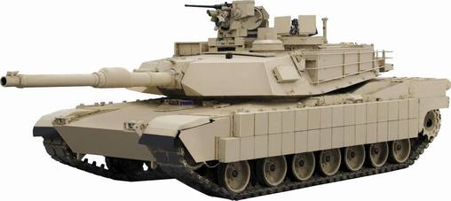
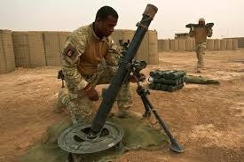
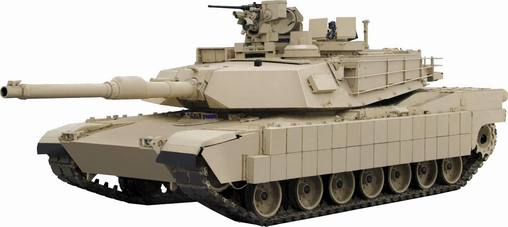
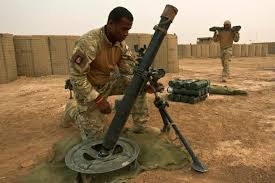
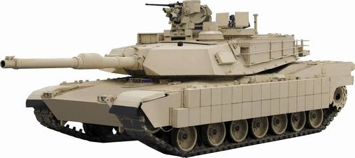
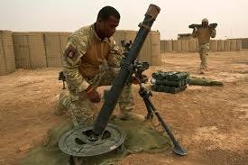

The stalemate on the Western Front led to the creation of tanks during the First World War. The fundamentals of a tank would be armor, firepower, and all-terrain mobility. The development started late into the war starting from the Allies.The Germans had only started developing their tanks after they had seen the French had started doing it. Some of these tanks went as fast as 3.6 mph at their top speed compared to an average jogger that runs 8.8 mph which is faster than the tank so the tanks were really slow. The first tanks were deployed during the Battle of Flers-Courcelette which was a part of the Battle of the Somme. About 1/3 of the tanks made it with the majority of it breaking down and this is beacuse they where rushed into combat before their design could mature.
In World War 2, tanks got an upgrade on how far they could travel and how easy they could move around the terrain. At the same time they started adding turrets to the light tanks along with having armor of 30mm or less with gun's caliber at 37mm-42mm. There are different types of tanks from light to heavy tanks and the light tank the most popular being used the most. Suspension was also being added to the tanks wheels so the impact was reduced and the tank didn't break down as much.In addition these tanks were capable of carrying at least a 3 man crew in the tank.The British had two types of tanks which were infantry or cruiser tanks. Infantry tanks were heavily armored with good all terrain performance but were slow , while the cruiser tanks that were itended for independent maneuvering, rapid breakouts and flanking attacks but had a cost to the armor they could carry.There were at least 5,000 tanks made in the year of 1944.
Modern Tanks can go as fast as 25 mph but 45 mph on flat ground. The tanks today are created to take on multiple roles and are called main battle tanks or univesal tanks instead of creating light, medium or heavy tank. There are new technologies that were devloped with the new tank in the modern world an example is camoflauge and thermal masking on these tanks which hide the tank from infared detection and camouflage to hide away from enemy vision. The most popular tank in the US arsenal is the M1 Abrams.There are at leasat 4 people in modern tanks and consist of the commander, loader, driver and gunner. Compared to WW1 and WW2 tanks the modern tank would win because of the advance armory and firepower it has. Modern tanks go substancially faster than tanks from WW1 that went at least 5 mph. Today the US has made over 10,000 M1 Abrams compared to the 5,000 tanks made in only the year 1944 for World War 1.
The M1 Abrams is the most well know tank that most people see today. It is one of the most used ground infantry used in wars like the war on Afghanistan, Iraq war, and the war on ISIS to name some. The armor consists of 350mm piercing-resistant and the thickness would compare to the size of a ruler which is pretty big. Some of these armors consist of steel or ceramic composites. It is able to withstand shrapnel to shells from other enemy tanks.It is also equipped with a fire control computer and helps with aiming and doesnt need to aim it with pure intuition. If you cmpare the M1 Abrams to other tanks of the past you can see where improvements were made. One of the major differences is the stablity and mobility of the tanks unlike back then which were slow and insufficent to take damage from other tanks.
Another weapon of masse dstr cuion aoretmtars which are like airstrikes but are fired from a distance and at a high angle. These shells come down from the sky and make a screeching noise when they come down. They can explode and cause distruction to the land and to the people around they area of explosion. These shells are the size of modern tank bullets and can be aimed as far as 3 miles. Anyone close to that area can heard them coming and be prepared to get bombared by a few of these shells, occasionally they inplant mustard gas but was forbidden after World War 1. In the modern world they still have motars but instead use missiles to target specific areas instead of a general place but we still today use the traditional motars which shoot bomb shells into the air at high angle to get them to go far and to soften up the enemy before going in.

